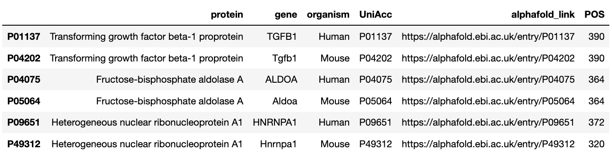

Aug 1 - Aug 7
The dataset contains information about the protein structures and the post translational modifications that target certain locations of the protein. Below we present an exploratory analysis of these datasets.
Protein structures
This dataset has the following attributes:
- UniAcc (string): UniProt accession.
- RES (string): identifier of the amino acid in the current position. There are 20 essential amino acids.
- POS (int): position of current residue in the protein primary structure. Ranges from 0 to the length of the protein minus 1 (0 indexing).
- quality (string): pLLDT score, which is a per-residue confidence metric of the AlphaFold prediction. Values can oscillate between 0 and 100 and can be interpreted as follows:
- Below 50: should not be interpreted. Confidence scores below 50 are a strong predictor of disorder.
- Between 50 and 70: low-confidence predictions. Treat with caution.
- Between 70 and 90: well modeled region.
- Above 90: modeled to high-accuracy. Can be used in applications like characterization of binding sites which require high-accuracy.
- secondary_structure (string): secondary structure that characterizes the current residue. Could be a BEND (bend), a TURN (turn), different types of HELX (helix) or STRN (strand).
- BEND (int): 1 if residue is a bend, 0 otherwise.
- HELX (int): 1 if residue is a helix, 0 otherwise.
- STRN (int): 1 if residue is a bend, 0 otherwise.
- TURN (int): 1 if residue is a turn, 0 otherwise.
- unstructured (int): 1 if residue is not BEND, HELX, STRN or TURN; 0 otherwise.
- *_coord_c (float64): x, y, z coordinates of the carbon atom.
- *_coord_ca (float64): x, y, z coordinates of the alpha carbon atom.
- *_coord_cb (float64): x, y, z coordinates of the beta carbon atom.
- *_coord_n (float64): x, y, z coordinates of the nitrogen atom.
The dataset contains data for three proteins in two species (human and mouse). Below, we present a general exploration of the data in a Q&A format, focusing on the spatial aspects of the structure.
Why are there different types of x, y, z coordinates?
The dataset includes coordinates for the carbon and nitrogen atoms of each residue. For the former, it has the coordinates of the the alpha and beta carbons, and the carbon of the carboxyl group. The former, is the core of the so called amino group. Check this website for more information.

The locations of different atoms can be used to compute quantities like the dihedral angle, which, among other things, could be useful for visualization. Nevertheless, for now we will ignore the extra atomic-level information and instead will use the alpha carbon as the residues representative.
This interactive visualization permits exploring the structure of P01137 which is the human Transforming growth factor beta-1 protein. We connected residues through their alpha carbons and, for each alpha carbon, attached the other atoms.
Are the structures the same across species?
The table below, presents information about available proteins. For each, we computed the number of residues. It can be observed how except from the HNRNPA1 gene, the others match in length across species.

What do the proteins primary, secondary and tertiary structures look like?
What is the distribution of the distances between adjacent residues?
What is the effect of uncertainty/prediction quality on the analysis of the structure?
Post translational modifications
Structures meet modifications
Persona development
Having an understanding of the dataset, we can define the ideal users that will use the proposed visualization tool. This exercise makes it easier to reason about their motivations, goals and needs.